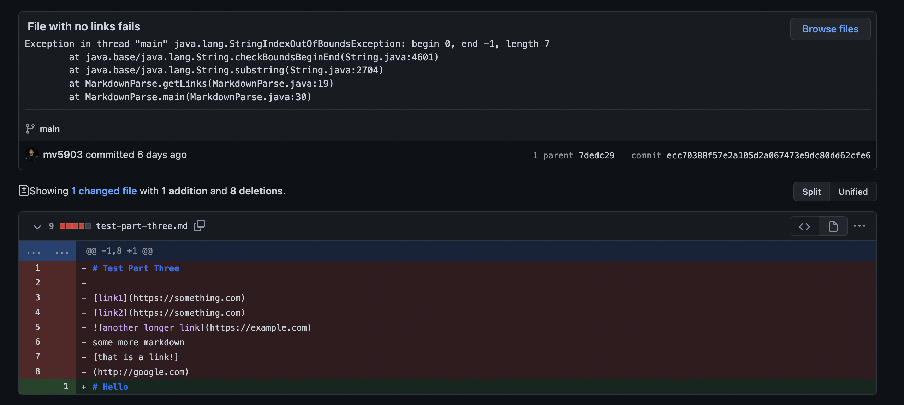
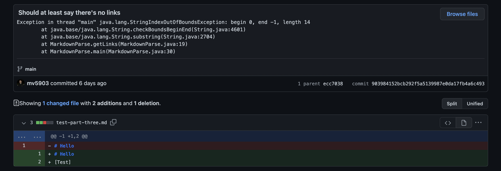

First Code Change
 Testing File
Testing File
Output:[https://something.com, https://something.com, https://example.com]
In this example, since images have a similar format in markdown to that of links, the original program counted it at a link when it should not have. Exclamation points should not be included in the list of links that the program finds.
Second Code Change

Testing File
Output:
Exception in thread "main" java.lang.StringIndexOutOfBoundsException: begin 0, end -1, length 7
at java.base/java.lang.String.checkBoundsBeginEnd(String.java:4601)
at java.base/java.lang.String.substring(String.java:2704)
at MarkdownParse.getLinks(MarkdownParse.java:19)
at MarkdownParse.main(MarkdownParse.java:30)
For this second example, the program would crash every time a blank file did not contain any links. The program was not correctly written to accept any line of text based on the line-reading imports that it was using. Simply fixing this to java.util.Scanner would make this better.
Third Code Change

Testing File
Output:
Exception in thread "main" java.lang.StringIndexOutOfBoundsException: begin 0, end -1, length 14
at java.base/java.lang.String.checkBoundsBeginEnd(String.java:4601)
at java.base/java.lang.String.substring(String.java:2704)
at MarkdownParse.getLinks(MarkdownParse.java:19)
at MarkdownParse.main(MarkdownParse.java:30)
Finally, I believed that a file that did have content inside of it, but did not actually contain any links should have at least gave us a blank list. However, this was a bug that caused the program to crash instead. The program should be able to take any markdown file.